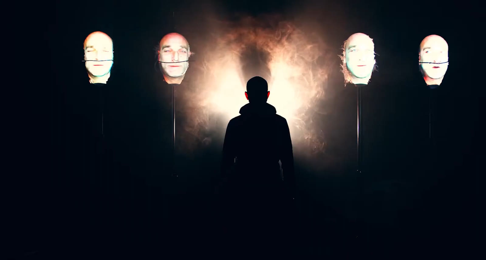
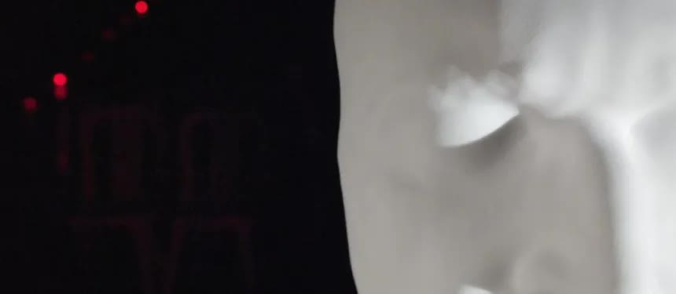

Log Out
Una persona che non è un personaggio, ma l'Uomo comune, uno e tutti. E le sue sinapsi, impulsi elettrici semplici, elementari. Entrambi sottoposti alla pressione costante, crescente, ossessiva di una realtà che impone ritmi frenetici e una quantità di dati, informazioni e input troppo grande per essere elaborata, sentita o anche solo pensata nella sua interezza. È un sottile filo di sabbia che cade dall'alto, una gigantesca clessidra che segna il tempo globale, l'evoluzione globale: un loop continuo in cui ogni ricerca di sé finisce con il perdersi nuovamente in un caos di numeri, informazioni, giudizi e regole.
L'opera, nata dalla collaborazione fra Tempo Reale e l'associazione culturale di produzione video The Factory prd, esce dai binari consueti del linguaggio visivo e sonoro, mescolando stili, schemi, tecniche e tecnologie innovative e sperimentali — dalla video arte all'arte plastica, dalla sound art alla tecnologia industriale — per indagare il rapporto fra le componenti più semplici del pensiero umano e l'enormità della società contemporanea, con le sue imposizioni, le sue influenze e la sua costante, vana ricerca di equilibrio.

